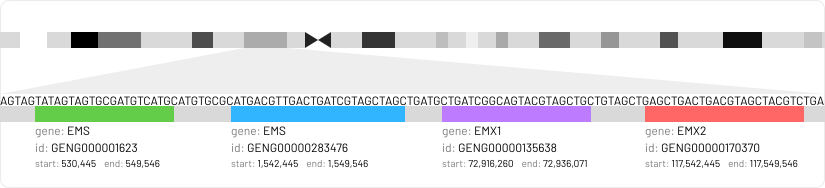
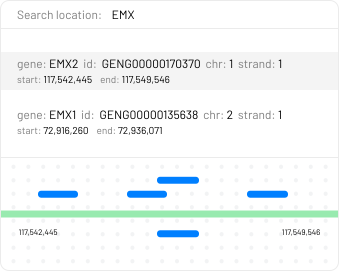
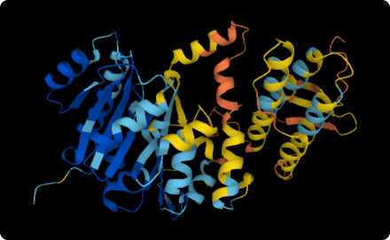

Explore the genome of any species. We are notating every known gene, and their regulatory counterparts.
Find CRISPR target locations and their scores.
Explore protein structures and compare different sources.
Anyone can participate and have clear path towards being one of the most influential contributors.
The DAO is run in a decentralised manner. The opinions are weighted by the token holdings and the reputation of the participant.
We are avoiding using tools and platforms controled by the central entities.
The structure and inner workings of a DAO are publicaly visible and verifiable.
We are following and promoting the latest security practices.